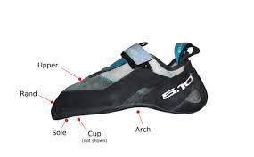

There are several ways to classify climbing shoes, such as by the profile of the shoe. Shoes can also be categorized by the type of rubber on the outsole. Some shoes have velcro ties, while others have shoe laces. Even the asymetry of the shoe matters! You can learn more about the different types of climbing shoes here.
| Profile | Shoe Asymmetry | Outsole Rubber Brands |
|---|---|---|
| Neutral | Low Asymetry | Stealth Rubber |
| Moderate | Medium Asymetry | Vibrum |
| Aggressive | High Asymetry | No Edge |
Climbing shoes can be pricey, so it is good to get an idea of what type of shoe you need. First, you should know the different parts of the shoe and what they are called.

If you want to prioritize comfort or are a beginner climber, a neutral profile will be the best option. On the other hand, an aggressive shoe may be best for a more experienced climberm is more uncomfortable, and is great for overhang climbing. Moderate profiles has a little bit of both worlds. In regard to the outsole rubber, they vary in amounts of friction and the choice depends on which type of rock you are climbing, or climber preference.
{kind=link}